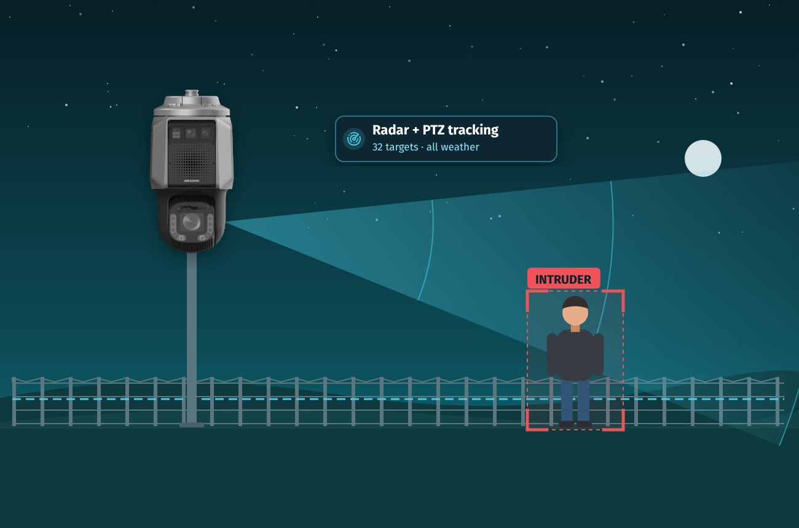
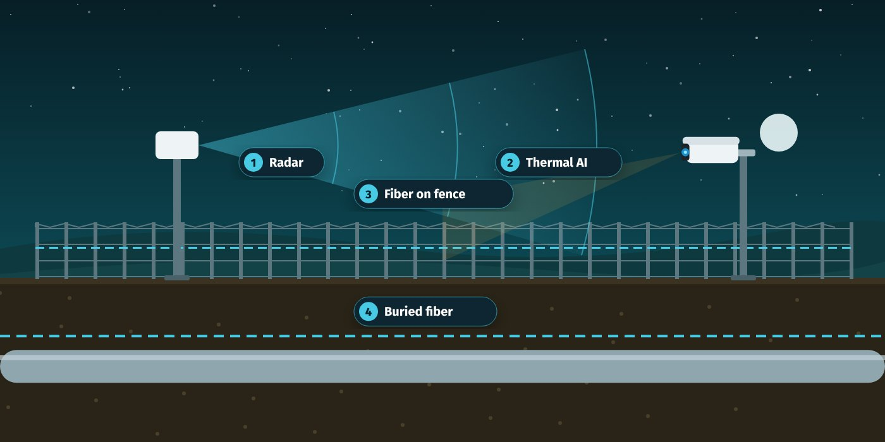
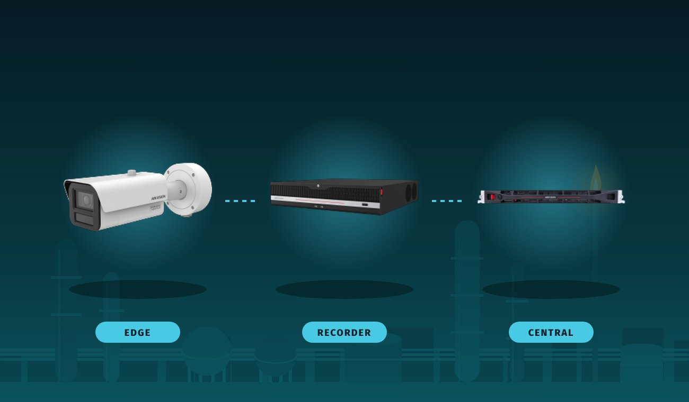
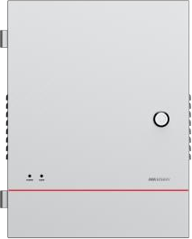
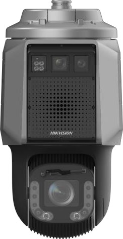
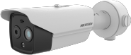
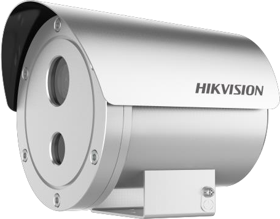
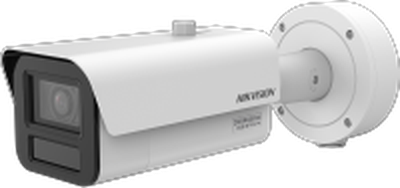
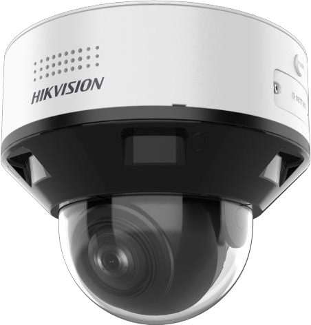
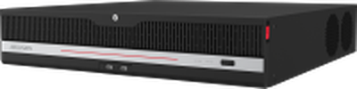

Oil and Gas Solutions
Security and safety for fields, pipelines and refineries.
Oil and gas sites run in harsh, remote and hazardous conditions, where an intrusion, a missing helmet or a gas release can stop production. As a Hikvision partner in Iraq, Sanaya delivers integrated command centers, layered perimeter protection and AI-powered HSE monitoring across upstream, midstream and downstream operations.
Built for
Hazardous, remote sites
Coverage
Fence lines to control rooms
Scope
Video, AI, sensing, access

One command center
Video, alarms, access, perimeter and HSE events managed in HikCentral Professional.
HSE by design
AI detection, emergency mustering and explosion-proof equipment built in from day one.
System Architecture
Every zone of the site reports to one command center.
Gates, perimeter, production areas and vehicles each run their own systems. HikCentral Professional brings them into one map, one alarm engine and one audit trail.
Command & control
HikCentral Professional unifies video, access, alarms and AI analytics in one platform.
Perimeter protection
Fiber sensing, radar and thermal cameras guard fences and buried pipelines.
Production & HSE
AI unsafe practice detection, thermography and emergency mustering.
Gates & vehicles
Access control, ANPR and on-board monitoring for staff, contractors and fleets.
Centralized management · Architecture diagram
Every zone connects to HikCentral Professional
Gate & Door
- Access control
- Time attendance
- Emergency mustering
Entrance, Exit & Parking
- Vehicle access and ANPR
- Visit scheduling
Production Area
- Visual process monitoring
- Industrial thermography
- Gas leak detection
Command & Control
HikCentral Professional
Software platform, smart video wall and mobile client
Perimeter
- Video protection
- Radar and thermal protection
- Fiber optic sensing
Vehicle Monitoring
- On-board monitoring
- Fleet management
Vertical Applications
- BI reports
- Industrial inspection
Overview
Integrated protection shaped for the realities of oil and gas operations.
Sanaya designs each site as one system: detection at the fence, verification by AI, safety monitoring in production areas and a command center that sees everything. Every layer is built on Hikvision technology and supported locally in Iraq.
Core Systems
The building blocks of a protected oil and gas site.
Each system works on its own and becomes stronger when it reports into the same command center.
HikCentral Professional
Unified platform for video, access control, alarms and AI analytics, from one site to 50,000 cameras.
Emergency Mustering
Roll call, evacuation broadcast, escape-door release and live headcount at muster points.
Fiber Optic Sensing
Detects climbing, cutting and digging along fences and buried pipelines, located to ±5 m.
Security Radar
Tracks up to 32 intruders in dust, rain and darkness and steers PTZ cameras to each one.
Thermal Imaging
Deep learning thermal cameras that tell people and vehicles from animals, day and night.
Explosion-Proof Cameras
ATEX and IECEx certified 316L stainless cameras for gas Zones 1 and 2.
PPE Detection
Alerts when workers in defined zones are missing a helmet or reflective vest.
Behavior Analytics
Falls, smoking, phone use, off-duty posts and overstay in confined spaces.
Gas Leak & Thermography
Thermographic monitoring of equipment temperature and gas leak detection.
Access Control
Card, face and fingerprint access with attendance for staff and contractors.
ANPR & Vehicle Access
Plate recognition, barriers and visit scheduling at gates and checkpoints.
On-Board Monitoring
Mobile video and tracking for tankers and field vehicles.
Solution Lines
Three Hikvision solutions that work as one.
HikCentral Professional
Hikvision's enterprise security management platform. Version 3 adds clustered servers with hot standby, so the command center keeps running through a server failure. Modules are licensed as needed: video, AcuSeek AI search, access control, visitors, vehicles and parking, alarms, emergency mustering, patrol and on-board monitoring.
20,000
cameras on a single server
50,000
cameras with clustered servers
55,000
manageable devices
1 billion
event, access and ANPR records
Perimeter Protection
Layered detection for long, remote boundaries. Fiber optic sensing covers fences and buried pipelines, radar tracks intruders across open ground, thermal cameras verify targets with AI, and explosion-proof cameras protect hazardous process zones. Every alarm arrives in HikCentral with location and live video.
50 km
per fiber sensing unit
±5 m
intrusion positioning accuracy
404 m
human detection, thermal
32
targets tracked by radar
AI Unsafe Practice Detection
Deep learning turns cameras into HSE supervisors. The system checks PPE, detects falls, smoking and phone use in hazardous zones, warns workers on site by voice, alerts supervisors and builds safety statistics. It runs in DeepinView cameras, DeepinMind NVRs or central analysis servers.
8MP
DeepinView AI cameras
32 ch
per DeepinMind NVR
64 ch
per analysis server
16
custom AI models per NVR
How It Works
From detection to response, step by step.
Diagrams of how each layer is deployed on site and what happens when an event is detected.

Diagram · Layered perimeter
Four layers, one alarm screen
Radar & Radar PTZ
Covers open yards and well pads; tracks targets through dust and darkness.
Thermal AI cameras
Verify each alarm and filter animals, wind and sandstorms.
Fiber on the fence
Detects climbing and cutting along the full fence line.
Buried fiber
Detects digging and hot tapping along buried pipelines.

Diagram · AI deployment
Edge, recorder or central
Edge
DeepinView camera
AI inside the camera for single high-risk points such as a wellhead or loading arm.
Recorder
DeepinMind NVR
Adds AI to existing standard cameras for a plant or depot with 16 to 32 cameras.
Central
Behavior analysis server
Large-scale analysis for refineries and multi-site operators, 16 to 64 channels.
Workflow · HikCentral Professional
Emergency mustering: who is still inside?
Faster, auditable evacuations
Trigger
Started by the operator or automatically by a linked alarm.
Alert & release
Evacuation broadcast on IP speakers; escape-route doors unlock.
Headcount
Staff check in at muster points; live list of in, out and missing.
Locate & rescue
Last-seen location and contact details for anyone missing.
Workflow · Perimeter Protection
From intrusion to response in seconds
Fewer false alarms, faster response
Detect
Fiber or radar senses the intruder and reports the position.
Verify
PTZ or thermal camera turns to the spot; AI confirms the target.
Alert
HikCentral shows the alarm on the e-map with live video.
Deter
Strobe light and voice warning at the fence.
Dispatch
Guards are sent and the event is saved as evidence.
Workflow · AI Unsafe Practice Detection
From violation to correction
Fewer incidents, auditable HSE records
Detect
AI spots a missing helmet, a fall or a phone in a hazardous zone.
Warn on site
Voice warning through the camera or an IP speaker.
Alert
Alarm with snapshot to the control room and supervisor app.
Record
Video and picture evidence saved against the event.
Report
HSE dashboards by area, shift and violation type.
Technical Specifications
Hikvision equipment selected for oil and gas conditions.
Figures from Hikvision datasheets. Final selection and sizing follow a Sanaya site survey.
| HikCentral Professional V3.1 | Single server | Clustered |
|---|---|---|
| Cameras | 20,000 | 50,000 |
| ANPR cameras | 3,000 | 3,000 |
| Thermal cameras | 200 | 200 |
| Security radars / radar PTZ | 30 | 30 |
| Alarm inputs | 5,000 | 5,000 |
| Events without pictures (avg) | 300 / s | 1,500 / s |
| Manageable devices | 55,000 total | 55,000 total |
| Access points · persons · cards | 5,000 · 100,000 · 500,000 | Same |
| Optical fiber sensors | 100 (10,000 units) | Same |
| Modbus / BACnet devices | 1,000 each | Same |
| Architecture | Detail |
|---|---|
| Clustering | Main server + up to 5 sub servers |
| Hot standby | Up to 5 synchronized standby servers |
| Streaming | Up to 64 servers, 600 channels each |
| Database | External PostgreSQL 16, hot backup |
| Server OS | Windows Server 2016 to 2025, Windows 10 / 11 |
| Virtualization | VMware ESXi 6.x / 7.x, Hyper-V |
| Recommended servers | DS-VE11-R/HW1 (3,000 ch) · DS-VH22-R/HW2 (10,000 ch) · DS-VH22-R/HW3E (10,000+ ch) |

DS-QFV0202W · 0502 · 1002 · 5002
Fiber Optic Vibration Sensing
- 2 km per channel up to 50 km per unit
- ±5 m positioning, alarm in ≤ 1–2 s
- Climbing, crossing and digging detection
- Fiber cut and tamper alarms

DS-PR1-60 · DS-2SR8C432 series
Security Radar & Radar PTZ
- Radar: 60 m, 100°, 32 targets, 24 GHz, IP67
- Radar PTZ: 100 m human, 120 m vehicle
- Automatic PTZ tracking of each target
- Works in rain, fog, dust and darkness

DS-2TD2628-10
Thermal Network Camera
- Human detection 404 m, vehicle 1,239 m
- NETD under 40 mK
- Deep learning human / vehicle classification
- Fire detection, strobe and voice deterrence

DS-2XE6242F-IS/316L
Explosion-Proof Camera
- ATEX and IECEx certified
- Ex db IIC T6 Gb · Ex tb IIIC T80°C Db
- Gas Zones 1 & 2, dust Zones 21 & 22
- 316L stainless, NEMA 4X, IP68

iDS-2CD7A•7G2-XZHS(Y)
DeepinView Bullet Camera
- 4MP or 8MP, DarkFighter
- Hard hat, smoking and phone detection
- Perimeter and people analytics
- IP67, IK10, custom algorithms

iDS-2CD75•7G2-XZHS(Y)
DeepinView PTRZ Dome
- 4MP, motorized 2.8–12 mm
- Hard hat detection
- Smoking and phone-call alarms
- Absence and on/off duty detection

iDS-9632NXI-M8/AI(B)
DeepinMind NVR
- 32 channels, 320 Mbps
- Helmet and reflective vest detection
- Falls, phone use, sleeping on duty, overstay
- Up to 16 custom AI models
DS-IE10xx-A7U/BA series
Behavior Analysis Server
- 16 / 32 / 64 channels
- Falls, conflict, gathering, absence
- Perimeter and people density
- Train models on pictures or video
• = 4 (4MP) or 8 (8MP). Built-in PPE detection covers helmets and reflective vests; other PPE items and site-specific checks use custom models trained on the Hikvision AI Open Platform.
Delivery
One accountable team from survey to support.
Sanaya is a Hikvision partner in Iraq, with engineers for design, integration and long-term maintenance.
Site survey
Zones, risks, cameras, doors, network and power for each area.
Design
Device selection, server sizing, licences, BOQ and integration plan.
Implementation
Installation, configuration and integration with existing systems.
Support
Operator training, health checks and maintenance contracts in Iraq.
Oil & Gas Security Strategy